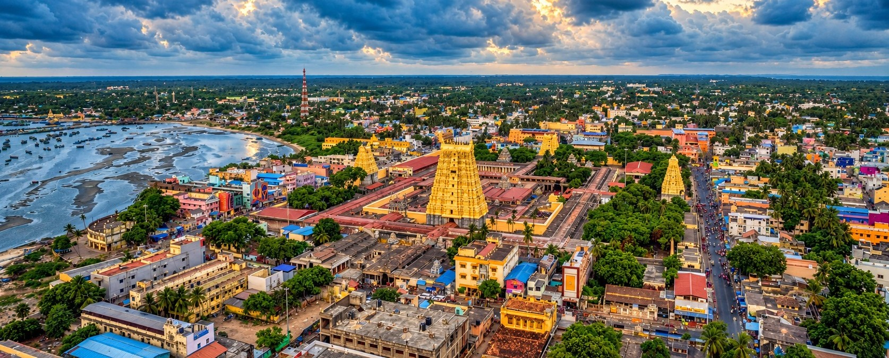
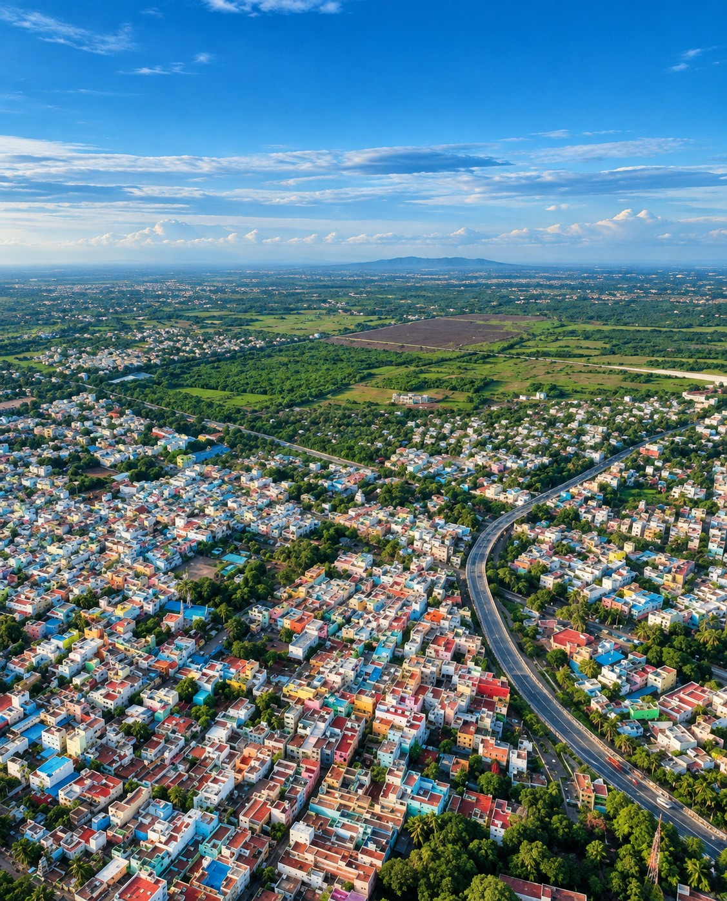
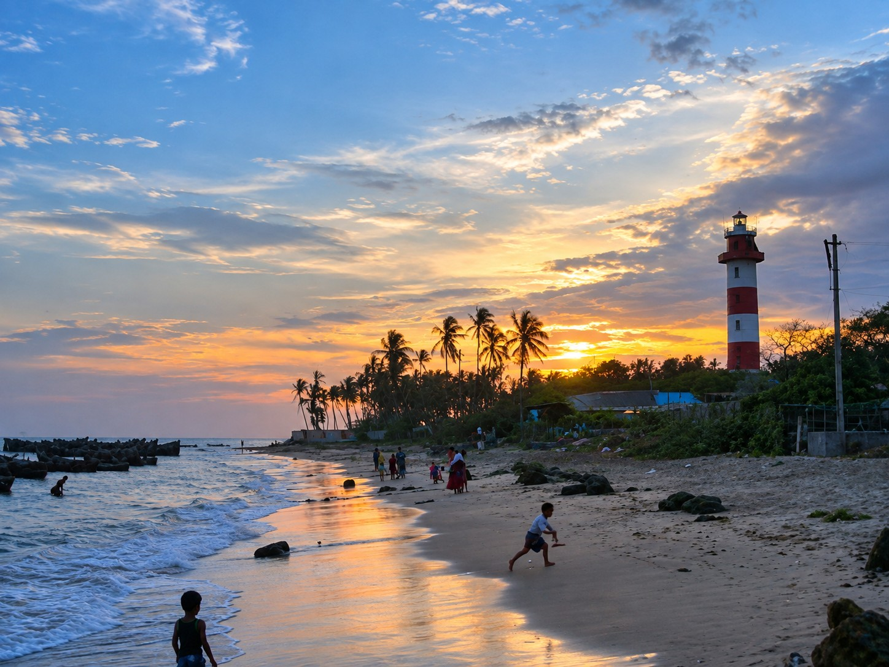

DISCOVER THE DISTRICT HUBS
Each town features its own distinctive character, from royal palaces and coastal trade to handloom weaving and sacred sea passages.
 Heritage & District Centre
Heritage & District Centre
1. Ramanathapuram
The administrative and historic capital of the district. Centered around the 17th-century Ramalinga Vilas Palace constructed by the Sethupathi kings, Ramanathapuram contains magnificent mural frescoes depicting royal court life and epic battles, thriving spice markets, and educational institutions.

Spiritual & Island Heritage2. Rameswaram
Situated on Pamban Island, Rameswaram is universally acknowledged as one of India's most venerated pilgrimage destinations. Beyond the grand Ramanathaswamy Temple, Rameswaram offers serene sunrise beaches, sacred wells, vibrant fisherman hamlets, and the birthplace of Dr. A.P.J. Abdul Kalam.

Culture & Cinema3. Paramakudi
Located on the banks of the sacred Vaigai River, Paramakudi is a bustling commercial center renowned for its exquisite handloom silk and cotton weaving. It holds international cultural fame as the hometown of legendary cinema icon Kamal Haasan, and serves as an important transport crossroads.
 Historic Coastal Settlement
Historic Coastal Settlement
4. Dhanushkodi
A historic coastal settlement and windswept sandspit extending towards Sri Lanka, where myth, tragedy, and nature blend seamlessly. Preserving the haunting ruins of the railway settlement submerged in 1964, Dhanushkodi's Arichal Munai is where the Indian Ocean's roaring breakers meet the gentle, mirror-like shallows of Palk Bay.

Maritime Heritage5. Kilakarai
An ancient coastal town with maritime trade roots stretching to Arabia, Persia, and the Roman Empire. Renowned for its historic pearl divers, seafaring merchants, and the historic Palaiya Jumma Palli (Old Jumma Masjid)—one of the oldest stone-carved Islamic prayer sanctuaries in South Asia.
 Ancient Temple & Spiritual Heritage
Ancient Temple & Spiritual Heritage
6. Thiru Uthirakosamangai
A legendary temple town whose antiquity precedes historical records. Known as the primeval Shiva kshetra where Lord Shiva taught secrets of the Vedas to Goddess Parvati, this sanctum is revered for its single-emerald Nataraja statue and an ancient Ilanthai (Jujube) tree revered for over three millennia.
DISTRICT GEOGRAPHIC TRAIL
Hover over or click any of the 8 pivotal landmarks to explore their coastal geography and maritime routes.